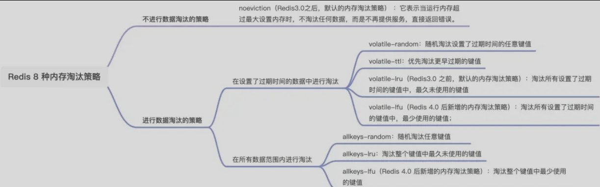

Redis-删除策略与内存淘汰
redis内存
过期删除
什么是过期删除？
将已过期的键值对进行删除，redis采用惰性删除+定期删除
惰性删除
不主动删除过期键，每次从数据库访问key时，检查key是否过期，如果过期则删除这个key
优点：访问才检查，索引只使用很少的系统资源，对CPU事件最友好
缺点：key已经过期，只要一直不被访问就一直在数据库，造成内存空间的浪费，对内存不友好
定期删除
每隔一段时间，从数据库随机取一定数量的key进行检查，并删除其中过期的key
流程：
- 从过期字典随机抽取20个key
- 检查这20个key，并删除已过期的key
- 如果本轮检查已过期key超过5个（也就是已过期key数量占随机抽取key数量的25%以上），则重复抽取检查；如果已过期key比例小于25%，则停止这个过程
过期字典：对一个key设置过期时间，那么就会把这个key带上过期时间存储到过期字典中
优点：限制删除操作的时长和频率，减少删除操作对CPU的影响
缺点：难以定义删除执行的时长和频率，太频繁对CPU不友好，太少对内存不友好
持久化对过期键处理
AOF日志
AOF文件写入阶段：AOF持久化时，如果key还没删除那么AOF保留；等到过期的时候，AOF追加一个del命令显式删除
AOF重写阶段：对key进行检查，过期的key不会保存到重写后的AOF文件中
RDB快照
RDB文件生成阶段：对key进行过期检查，过期的key不会存入RDB文件
RDB加载阶段：加载阶段要看是主服务器还是从服务器
- 主服务器：载入RDB文件会对保存的键进行检查，过期键不会载入数据库
- 从服务器：不进行检查，直接载入到数据库
主从模式下过期键处理
从库不会进行过期扫描，从库对过期的处理时被动的。
也就是即使从库中的 key 过期了，如果有客户端访问从库时，依然可以得到 key 对应的值，像未过期的键值对一样返回。
从库的过期键处理依靠主服务器控制，主库在 key 到期时，会在 AOF 文件里增加一条 del 指令，同步到所有的从库，从库通过执行这条 del 指令来删除过期的 key
内存淘汰
什么是内存淘汰？
在内存满了的时候，redis会触发内存淘汰策略，来淘汰一些不必要的内存资源，以腾出空间，保存新的内容
策略
redis有八种内存淘汰策略：

分为两种：不进行数据淘汰、进行数据淘汰
不进行数据淘汰：
- noeviction（reids3.0之后默认淘汰策略）：运行内存超过最大设置内存时，不淘汰任何数据，不再提供服务，直接返回错误
进行数据淘汰：
- 在设置过期时间的数据中进行淘汰
- volatile-random：随机淘汰设置了过期时间的任意键值
- volatile-ttl：优先淘汰更早过期的键值
- volatile-lru（reids3.0之前默认淘汰策略）：淘汰设置过期时间中最久没使用的键值
- volatile-lfu：淘汰设置过期时间中最少使用的键值
- 在所有数据范围内进行淘汰
- allkeys-random：随机淘汰任意键值
- allkeys-lru（reids3.0之前默认淘汰策略）：淘汰整个键值最久没使用的
- allkeys-lfu：淘汰整个键值最少使用的键值
LRU：最近最少使用
最久未被访问的数据先被淘汰
传统的LRU基于链表，每次访问一个元素移动到链表头部，删除的时候删除尾部
redis实现的一种近似LRU算法，为了更好的节约内存，在redis对象结构体添加一个最后一次访问时间的字段
进行内存淘汰时，随机采样的方式；随机取5个值，淘汰最久没有使用的那个
优点
- 不用为所有数据维护一个大链表，节约空间
- 不用在每次数据访问时移动链表项，提升缓存性能
缺点
- 无法解决缓存污染问题，比如一次读取大量数据，而这些数据只被读取一次，那么这些数据会长时间存在redis中
LFU：最近最不常用
访问频率低的数据先被淘汰
LFU 算法会记录每个数据的访问次数。当一个数据被再次访问时，就会增加该数据的访问次数
redis实现LFU：对象头lru字段的24bit分两段，高16bit存储访问时间戳，低8bit记录访问频次